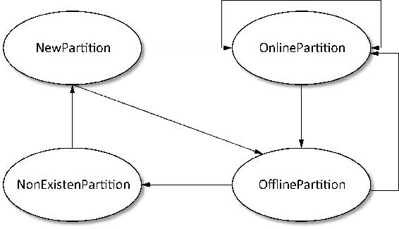
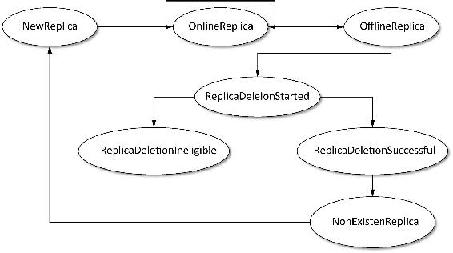
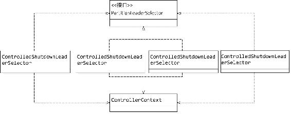
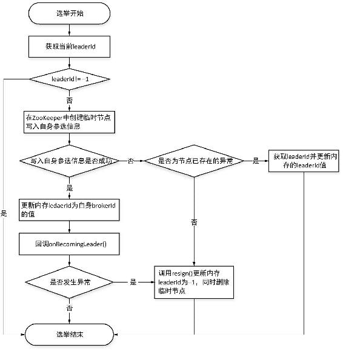
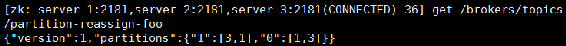
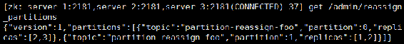
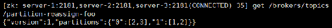

3.2 控制器
在启动Kafka集群时，每一个代理都会实例化并启动一个KafkaController，并将该代理的brokerId注册到ZooKeeper的相应节点当中。Kafka集群中各代理会根据选举机制选出其中一个代理作为Leader，即Leader控制器（本书简称之为控制器，在没有特殊说明情况下，控制器均指Leader控制器）。当控制器发生宕机后其他代理再次竞选出新的控制器。控制器负责主题的创建与删除、分区和副本的管理以及代理故障转移处理等。当一个代理被选举成为控制器时，该代理对应的KafkaController就会注册（Register）控制器相应的操作权限，同时标记自己是Leader。当代理不再成为控制器时，就要注销掉（DeRegister）相应的权限。实现这些功能的程序入口是在Kafka核心core工程下的kafka.controller.KafkaController类。在讲解控制器之前，有必要先介绍如下字段、数据结构和术语。
- controller_epoch：用于记录控制器发生变更次数，即记录当前的控制器是第几代控制器（本书中我们称之为控制器轮值次数）。初始值为0，当控制器发生变更时，每选出一个新的控制器需将该字段加1，每个向控制器发送的请求都会带上该字段，如果请求的controller_epoch的值小于内存中controller_epoch的值，则认为这个请求是向已过期的控制器发送的请求，那么本次请求就是一个无效的请求。若该值大于内存中controller_epoch的值，则说明已有新的控制器当选了。通过该值来保证集群控制器的唯一性，进而保证相关操作一致性。该字段对应ZooKeeper的controller_epoch节点，通过登录ZooKeeper客户端执行get/controller_epoch命令，可以查看该字段对应的值。
- zkVersion：作用类似数据库乐观锁，用于更新ZooKeeper路径下相应元数据信息，如controller epoch，ISR信息等。
- leader_epoch：分区Leader更新次数。controller_epoch是相对代理而言的，而leader_epoch是相对于分区来说的。由于各请求达到顺序不同，控制器通过controller_epoch和leader_epoch来确定具体应该执行哪个命令操作。
- 已分配副本（assigned replica）：每个分区的所有副本集合被称作已分配副本，简写为AR，本书中所有AR均表示此含义，而ISR是与分区Leader保持同步的副本列表。
- LeaderAndIsr：Kafka将Leader对应的brokerId和ISR列表封装成一个LeaderAndIsr类。以JSON串表示为{"leader" :Leader的brokerId, "leader_epoch" :leader更新次数, "isr" :ISR列表}。
- 优先副本（preferred replica）：在AR中，第一个副本称为preferred replica，也就是我们说的优先副本。理想情况下，优先副本即是该分区的Leader，Kafka要确保所有主题的优先副本在Kafka集群中均衡分布，这样就保证了所有分区的Leader均衡分布。保证Leader在集群中均衡分布很重要，因为所有的读写请求都由分区Leader副本进行处理，如果Leader分布过于集中，就会造成集群负载不均衡。为了保证优先副本的均衡分布，Kafka提供了5种分区选举器（PartitionLeaderSelector），当分区数发生变化或是分区Leader宕机时就会通过分区选举器及时选出分区新的Leader。
在对控制器实现细节涉及的字段、数据结构和术语进行简要介绍之后，下面将对控制器相关内容进行深入分析。
3.2.1 控制器初始化
每个代理在启动时会实例化并启动一个KafkaController。KafkaController实例化时主要完成以下工作。
（1）创建一个ControllerContext实例对象，该对象很重要的一个作用是用于缓存控制器各种处理操作所需要的数据结构。ControllerContext实例化时会初始化用于记录控制器选举次数的epoch及与之对应的zkVersion字段的值，初始时都为0，同时设置当前正常运行的代理列表、主题列表、各主题对应分区与副本的AR列表等。声明控制器与其他代理通信的ControllerChannelManager对象，ControllerChannelManager在这里只是声明并没有创建和启动。实例化代理选举控制器操作的ReentrantLock。
（2）实例化用于维护和管理分区状态的状态机（PartitionStateMachine）。Kafka分区定义了4个状态，分区状态及描述如表3-1所示。
表3-1 Kafka分区状态及描述
|
状 态 名 |
状 态 值 |
描 述 |
|---|---|---|
|
NewPartition |
0 |
当一个分区被创建后就处于该状态，处于该状态的分区已得到了副本分配，但还没有Leader和ISR信息 |
|
OnlinePartition |
1 |
一旦分区的Leader选举出来后，分区就处于该状态 |
|
OfflinePartition |
2 |
如果分区Leader成功选出来之后，Leader的代理仍处于宕机状态，则该分区就转到离线（OfflinePartition）状态 |
|
NonExistentPartition |
3 |
处于此状态表明该分区可能还没有被创建，也可能是曾被创建过但已被删除 |
分区状态机对应的4种状态的转换关系如图3-3所示。

图3-3 分区状态机状态转换图
分区状态机会注册两个监听器，这两个监听器的作用如下。
- TopicChangeListener用于监听/brokers/topics路径下子节点变化，当创建一个主题时，会在该路径下创建一个与该主题相同名字的子节点。当该路径下子节点发生变化即主题有变化时就会触发该监听器，该监听器的handleChildChange()方法中会更新ControllerContext中维护的主题列表信息及各主题对应分区的AR信息。同时，若该路径下节点的变更是由于创建一个新的主题所引起的，则调用控制器相应方法进行处理，会向该主题注册一个用于监听该主题分区和副本发生变化的监听器。
- DeleteTopicsListener用于监听/admin/delete_topics子节点的变更，当删除一个主题时，会在该路径下创建一个与待删除主题相同名字的子节点，当该路径下子节点发生变化时就会触发该监听器，在该监听器的handleChildChange()方法中会将待删除的主题从/brokers/topic路径下删除，并将该主题加入到TopicDeletionManager维护的记录待删除主题的队列当中，交由TopicDeletionManager执行删除。
（3）实例化一个对副本状态管理的状态机ReplicaStateMachine。Kafka对副本定义了7种状态，各副本状态及描述如表3-2所示。
表3-2 Kafka副本状态及描述
|
状 态 名 |
状态值 |
描 述 |
|---|---|---|
|
NewReplica |
1 |
新创建的副本状态即为NewReplica，处于该状态的副本只能接受成为Follower副本的转换请求 |
|
OnlineReplica |
2 |
一旦副本被启动或者已是分区AR的一部分时，该副本就处于在线状态，处于该状态的副本可以接受成为Leader或者Follower的转换请求 |
|
OfflineReplica |
3 |
如果检测到一个副本所在的代理已宕机，则将该副本状态设置为此状态即离线状态，表示该副本将要被从ISR中下线 |
|
ReplicaDeletionStarted |
4 |
在对处于离线状态的副本进行删除操作时，先将副本状态标记为此状态，表示正在进行删除离线副本的操作 |
|
ReplicaDeletionSuccessful |
5 |
当删除副本成功，删除请求返回没有错误应答码时，则将副本标记为此状态 |
|
ReplicaDeletionIneligible |
6 |
如果副本删除失败，则将副本状态设置为此状态 |
|
NonExistentReplica |
7 |
如果副本删除成功，则将副本状态设置为此状态 |
表3-2对副本状态进行了详细介绍，各状态之间有效状态转换如图3-4所示。

图3-4 副本状态机状态转换图
在副本状态机内部定义了一个BrokerChangeListener监听器，该监听器会监听ZooKeeper的/brokers/ids/路径下各代理对应的brokerId节点的变化。当代理与ZooKeeper会话超时，相应临时节点被删除抑或是一个新代理加入时，/brokers/ids路径下的子节点发生变化就会触发该监听器，该监听器调用ControllerContext.controllerChannelManager对节点变化进行相应处理。
（4）创建用于将当前代理选举为控制器的ZooKeeperLeaderElector选举器对象，实例化该对象时需要传递两个回调函数：完成控制器相应初始化操作的onControllerFailover()方法，以及当新的控制器当选时让先前的控制器注销控制器权限的onControllerResignation()方法。Kafka控制器选举策略是在ZooKeeper的/controller路径下创建一个临时节点，并注册一个LeaderChangeListener，通过该监听器来监听该临时节点，当该临时节点信息发生变更时，就会触发该监听器。当新当选的控制器信息被保存时，就会触发该监听器的handleDataChange()方法进行相应处理；当监听器监听到/controller路径下控制器信息被删除时，将触发onControllerResignation()回调方法，同时触发重新选举机制。关于控制器的选举过程在后面小节会有详细讲解，这里不再赘述。
（5）创建一个独立定时任务KafkaScheduler，该定时任务用于控制器进行平衡操作，其生命周期只在代理成为Leader控制器期间有效，当代理不再是Leader控制器时，即调用onControllerResignation()方法时该定时任务就会被关闭。
（6）声明一个对主题操作管理的TopicDeletionManager对象。该对象在3.2.5节将会详细阐述。
（7）创建一个用于在分区状态发生变化时为分区选举出Leader副本的分区选举器PartitionLeaderSelector。Kafka提供了5种分区选举器，这些选举器会被分区状态机调用，当分区的状态发生变化时，根据分区所处状态选用不同的选举器为分区选出Leader副本。分区选举器只定义了一个selectLeader()方法，该方法接受两个对象，一个表示要被选举为Leader的分区对象TopicAndPartition，另一个表示该分区当前的Leader和ISR对象LeaderAndIsr。该方法返回一个元组，元组包括新当选的Leader，ISR对象以及由一组副本构成的LeaderAndIsrRequest对象。分区选举器的类层次结构如图3-5所示。

图3-5 Kafka分区选举器的类图
各选举器的功能及选举策略如下。
- OfflinePartitionLeaderSelector：分区状态机启动、新创建一个分区或是将一个分区状态由NewPartition状态、OfflinePartition状态转换到OnlinePartition状态时会调用该选举器，为分区选出Leader，得到分区的LeaderAndIsr。该选举器选举策略是首先判断是否有存活（本书用存活来代表心跳检测正常的代理所处的状态）的ISR，若ISR中至少有一个存活的代理，则从ISR列表中选第一个存活的代理作为Leader，存活的ISR作为新的ISR；否则，若配置项unclean.leader.election.enable为true，该配置项默认为true，即表示允许从不在ISR列表中的副本选举Leader，同时AR中若有存活的副本，则从AR列表中选第一个代理作为Leader，存活的AR作为新的ISR。当没有可选作Leader的代理时，会抛出NoReplicaOnlineException的异常。Leader和ISR选出后构造LeaderAndIsr对象，将当前的leader_epoch加1赋值给新的leader_epoch，将当前的zkVersion加1作为新的zkVersion。若Leader选举成功，后续会将LeaderAndIsr对象和controller_epoch值构造PartitionStateInfo对象。登录ZooKeeper客户端在ZooKeeper的/brokers/topics/${topicName}/partitions/${partitionId}/state可以查看到某个分区的元数据信息。例如，查看有5个Broker，即brokerId={0,1,2,3,4}，主题名topicName为“topic-analyse”，partitionId为0的分区信息如下：
{"controller_epoch":7,"leader":3,"version":1,"leader_epoch":0,"isr":[1,3]}以上分区信息表示该分区的Leader副本为brokerId为3的节点，同时该分区至少有2个副本，因为ISR当前有2个节点，集群的控制器总共发生了7次变更，而分区的Leader从最初当选还未发生过变化，可以从leader_epoch值来判断分区或是ISR是否发生过变化。
- ReassignedPartitionLeaderSelector：当分区进行重分配时会调用该选举器。该选举器的选举策略是从AR列表中找出存活副本列表，若有存活的副本则取存活副本列表的第一个副本作为Leader，将当前ISR作为新的ISR，将AR作为接受LeaderAndIsr请求的副本集合。若没有候选的副本，则抛出NoReplicaOnlineException异常。
- PreferredReplicaPartitionLeaderSelector：该选举器直接将优先副本设置为分区的Leader。该选举器首先根据当前Leader是不是由优先副本担任来决定是否需要选举。若当前Leader由优先副本担任则无需设置，仅抛出LeaderElectionNotNeededException异常进行提示；若优先副本不是Leader但在该分区的ISR列表中，则将优先副本选为Leader，将AR作为接受LeaderAndIsr请求的副本集合；否则抛出StateChangeFailedException异常。
- ControlledShutdownLeaderSelector：该选举器将从ISR中剔除已关闭的节点，将剔除已关闭节点后的ISR作为新的ISR，同时从新的ISR中选取第一个作为Leader副本。将AR中剔除已关闭节后的副本节点作为接受LeaderAndIsr请求的副本集合。
- NoOpLeaderSelector：该选举器只返回当前分区的Leader和ISR。
（8）实例化ControllerBrokerRequestBatch。在前面实例化了分区状态机和副本状态机，这两个状态机在相应状态发生变化时相应监听器都会调用各自的handleStateChange()方法进行处理，而ControllerBrokerRequestBatch封装了leaderAndIsrRequestMap、stopReplicaRequestMap和updateMetadataRequestMap这3个集合，用来记录和缓存handleStateChange()方法中产生的request，控制器将这些request交由ControllerBrokerRequestBatch.sendRequestsToBrokers()方法批量发送出去，交由KafkaApis调用相应的handle方法进行处理。
（9）实例化3个监听器，即用于监听分区重分配的PartitionsReassignedListener，用于监听当分区状态变化时触发PreferredReplicaPartitionLeaderSelector选举器将优先副本选举为Leader的PreferredReplicaElectionListener、用于监听当ISR发生变化时将ISR变化通知给ZooKeeper进行更新操作，同时向所有的代理节点发送元数据修改请求的IsrChangeNotificationListener。
至此，控制器实例化过程讲解完毕。当一个代理启动时就会创建一个KafkaController实例并启动。在启动KafkaController时，先注册一个用于监听代理与ZooKeeper会话超时的监听器SessionExpirationListener，然后启动控制器选举，让当前代理试图去竞选为控制器。
3.2.2 控制器选举过程
每个代理启动时会创建一个KafkaController实例，当KafkaController启动后就会从所有代理中选择一个代理作为控制器，控制器是所有代理的Leader，因此这里也称之为Leader选举。除了在启动时会导致选举外，当控制器所在代理发生故障或ZooKeeper通过心跳机制感知控制器与自己的连接Session已过期时，也会再次从所有代理中选出一个节点作为集群的控制器。
Kafka控制器的选举依赖于ZooKeeper。在集群整个运行过程中，代理在ZooKeeper不同节点上注册相应的监听器。各监听器各司其职，当所监听的节点状态发生变化时就会触发相关函数进行处理。本节将详细讲解控制器的选举过程。
在3.2.1节中提到过在控制器初始化时创建了一个将代理选举为Leader的ZooKeeperLeaderElector对象，代码如下：
val controllerElector=new ZooKeeperLeaderElector(controllerContext, ZkUtils.ControllerPath,
onControllerFailover, onControllerResignation, config.brokerId)通过实例化ZooKeeperLeaderElector的入参可看到选举前后需要做的工作。参数config.brokerId是候选控制器代理对应的brokerId，参数ZkUtils.ControllerPath即为选举过程所依赖的/controller路径，当代理当选为Leader控制器后回调onControllerFailover，当前代理上任（sign），注册Leader拥有的权限和启动相应工作；当代理不再担任Leader时，当前代理退位（resign），注销Leader拥有的权限，即回调onControllerResignation相应进行处理。
在ZooKeeperLeaderElector启动时首先注册一个LeaderChangeListener，负责监听ZooKeeper的/controller节点数据变化，该节点存储了当前Leader的brokerId，数据格式为一个JSON字符串：{"version" :1, "brokerid":brokerId, "timestamp":timestamp}。当该节点数据发生变化时，比较当前代理的brokerId与当前Leader的leaderId是否相同，若不同，则表示当前代理已不是Leader，则回调onControllerResignation退位，注销Leader控制器相关权限，将当前代理状态设置为RunningAsBroker，同时将该代理的leader_epoch和zkVersion设置为0。当该节点数据被删除时，若当前代理是Leader，则先退位，然后再触发选举，否则直接触发选举。
控制器选举算法思想较简单，入口为ZooKeeperLeaderElector.select()方法，该方法执行逻辑如下。
每个代理首先从ZooKeeper的/controller节点获取Leader信息，解析当前Leader的leaderId（作为Leader的代理对应的brokerId）。若leaderId等于−1，则表示还没有成功选举出Leader，则该代理将封装有自己brokerId的信息以JSON串{"version": 1, "brokerid": brokerId, "timestamp":timestamp}格式请求ZooKeeper将该数据写入/controller节点。如果leaderId不为−1，则表示已有代理抢先成为了Leader，则停止选举。若写入代理信息成功，则当前代理即为所选出的Leader。
在抢占写/controller节点时若发生非ZkNodeExistsException异常，则会将leaderId设置为−1，同时删除存储在/controller节点的元数据信息，以便让请求最先到达ZooKeeper的代理成为Leader，由于删除了/controller节点将会触发LeaderChangeListener.handleDataDeleted()方法，就会重新选举Leader。同时由于/controller节点数据的变化，将触发LeaderChangeListener.handleDataChange()方法，这时其他代理将通过当前的leaderId与自己的brokerId比较，若在/controller节点数据发生变化前自己是Leader，而现在leaderId与自己的brokerId不同，则自己退位（resign），回调onControllerResignation函数。
可见，Kafka控制器选举的核心思想就是各代理通过争抢向/controller节点请求写入自身的信息，先成功写入的代理即为Leader。控制器选举流程如图3-6所示。

图3-6 控制器选举流程
3.2.3 故障转移
我们在3.2.2节对选举过程进行了详细介绍，而触发控制器进行选举有3种情况：一是在控制器启动的时候，二是当控制器发生故障转移的时候，三是当心跳检测超时的时候。因此，我们说控制器故障转移的本质是控制权的转移，而控制权的转移也就是重新选出新的控制器。在控制器实例化时创建了一个ZooKeeperLeaderElector对象，实例化该对象时需要两个回调函数，分别用于代理当选为控制器时注册相应权限的onControllerFailover()方法和不再是Leader控制器时注销相应权限的onControllerResignation()方法。对故障转移的讲解，我们也是主要介绍这两个方法具体的实现逻辑。
1．onControllerFailover操作
KafkaController的onControllerFailover()方法的作用就是完成控制器相应的初始化工作，如果当前的控制器正常运行，即在控制器启动时的标志位isRunning为true，则执行以下逻辑完成控制器的初始化，否则表示当前的控制器已关闭，将终止相应的初始化处理。
（1）从ZooKeeper的/controller_epoch路径读取当前控制器的轮值次数，并更新到当前ControllerContext中。
（2）将控制器的轮值次数加1，并尝试去更新ZooKeeper中/controller_epoch中记录的轮值次数的值，若更新失败则表示当前的控制器也被其他控制器替代，因此当前代理成为控制器相关的初始化处理将以异常而告终。若更新失败是由于ZooKeeper中不存在/controller_epoch节点，则表明是控制器首次启动，第一个控制器当选，因此在ZooKeeper中创建该节点并写入控制器轮值次数。同时更新ControllerContext中缓存的与轮值次数相关的数据。
前两步是判断能否为控制器完成初始化处理的前置条件，只有保证控制器轮值次数正常处理之后，才会进行以下初始处理工作。
（1）注册分区管理相关的监听器。用于监听ZooKeeper的/admin/reassign_partitions节点引发分区重分配操作的PartitionsReassignedListener；用于监听ZooKeeper的/isr_change_notification节点用于处理分区ISR发生变化的IsrChangeNotificationListener；用于监听/admin/preferred_replica_election节点将优先副本选为分区Leader操作的PreferredReplicaElectionListener。
（2）注册主题管理的监听器。通过分区状态机向ZooKeeper的/brokers/topics节点注册一个TopicChangeListener，用于监听主题发生变化时进行相应的处理。同时，若开启了delete.topic.enable，即该配置项值为true，则同时向ZooKeeper的/admin/delete_topics节点注册一个DeleteTopicsListener，该监听器会完成服务器端删除主题相应的操作，否则当客户端删除一个主题时，仅是将该主题标识为删除，但服务端并没有将该主题真正删除。
（3）注册代理变化处理的监听器。通过副本状态机向ZooKeeper的/brokers/ids节点注册一个BrokerChangeListener，当代理发生增、减变化时进行相应的处理。
（4）初始化ControllerContext，即当一个代理成为控制器后，原控制器所持有的ControllerContext将被重新赋值。首先从ZooKeeper中获取当前所有存活的代理、所有的主题及分区分配方案信息，分别初始化存活的代理集合、主题集合及每个分区的AR集合信息，更新ControllerContext中每个分区的Leader及ISR信息。当ControllerContext缓存的基础信息初始化后，启动用于管理控制器与各代理之间通信的ControllerChannelManager。然后分别初始化需要优先副本选举的分区，以及需要选举的分区所对应的分区分配方案。最后创建一个用于管理主题删除操作的TopicDeletionManager对象。
（5）启动分区状态机和副本状态机。
（6）从ControllerContext中读取所有主题，轮询每个主题，为每个主题添加用于监听分区变化的PartitionModificationsListener。
（7）检测当前是否有分区需要触发分区重分配操作。若需要重分配，则进行一次分区重分配操作。
（8）检测当前是否有需要将优先副本选举为Leader的分区，并进行相应的操作。
（9）向Kafka集群中所有存活的代理发送更新元数据请求。
（10）根据配置auto.leader.rebalance.enable决定是否创建用于分区平衡操作的定时任务。该配置项默认为true。若该配置项为true，则创建一个每隔${leader.imbalance.check.interval.seconds}秒，默认是300秒，即每5分钟执行一次分区重分配检查及分区重分配操作的定时任务。
（11）启动第4步创建的删除主题管理的TopicDeletionManager组件。
至此，onControllerFailover()操作的执行逻辑介绍完毕。通过该方法执行逻辑讲解可知，当一个代理成为控制器后，主要完成相应元数据的初始化以及对代理、主题、分区等变化感知的监听器的注册和启动相应管理组件。
2．onControllerResignation操作
当一个代理不再是控制器时，需要注销控制器相应的权限及修改相应元数据的初始化信息。KafkaController通过调用KafkaController.onControllerResignation()方法实现一个代理从控制器到普通代理的转变操作，该方法的执行逻辑如下。
首先，取消该控制器在ZooKeeper中注册的用于对分区及副本变化感知的监听器的监听；接着，关闭删除主题操作的TopicDeletionManager，并关闭分区平衡操作的定时任务（若参数auto.leader.rebalance.enable为true，即在当前代理成为控制器时启动的分区平衡操作的定时任务）。
然后，在获取ControllerContext维护的重入锁的条件下取消对分区ISR变化监听，关闭分区状态机和副本状态机，关闭控制器与其他代理之间进行通信的ControllerChannelManager。
最后，将ControllerContext中用于记录控制器轮值次数及轮值数对应的epochZkVersion字段置零，并将当前代理状态设置为RunningAsBroker，即当前代理不再是控制器的角色。
3.2.4 代理上线与下线
在介绍完控制器选举操作两个回调方法之后，我们再简要对代理增、减变化，或者说是代理上线与下线操作时BrokerChangeListener所做的处理进行介绍。
1．代理上线
当有新的代理上线时，在代理启动时会向ZooKeeper的/brokers/ids节点下注册该代理的brokerId，此时会被副本状态机在ZooKeeper所注册的BrokerChangerListener监听器监听到该节点信息的变化，通过ZooKeeper中记录的节点信息及ControllerContext缓存的节点信息，计算出新上线的节点集合，对新上线的代理节点调用ControllerChannelManager.addBroker()方法完成新上线代理网络层相关初始化处理。然后调用KafkaController.onBrokerStartup()方法进行处理，该方法处理逻辑如下。
首先，向集群当前所有的代理发送UpdateMetadataRequest请求，这样所有的代理通过这种方式就会知道有新的代理加入。
接着，查找出被分配到新上线节点上的副本集合，通过副本状态机对副本状态进行相应变迁处理，将这些副本的状态更新为OnlineReplica，并通过分区状态机对分区状态为NewPartition和OfflinePartition的分区进行处理，将其状态扭转至OnlinePartition状态，并触发一次分区Leader选举，以确认新增加的代理是否是分区的Leader。
然后，轮询被分配到新上线代理的副本，调用KafkaController.onPartitionReassignment()方法执行服务端分区副本分配操作。在3.2.6节的“分区重分配”小节将对onPartitionReassignment()方法进行详细讲解。
最后，恢复由于新代理上线而被暂停的删除主题操作的线程，让其继续完成服务端删除主题的操作。
至此，新代理上线时BrokerChangeListener所进行的处理基本流程介绍完毕。当然，每步操作都涉及更复杂数据结构的处理，这里我们只是简要梳理了对代理上线操作的几个关键步骤，这样可以便于大家对新代理上线处理整体逻辑的把握，同时为阅读源码提供参考。
2．代理下线
当代理下线时，该代理在ZooKeeper的/brokers/ids节点注册的与该代理对应的节点将被删除，此时BrokerChangeListener的handleChildChange()方法将被触发。
与新代理上线操作类似，首先要查找下线节点的集合，然后轮询下线节点集合，调用ControllerChannelManager.removeBroker()方法，关闭每个下线节点的网络连接，清空下线节点的消息队列，关闭下线节点发送Request请求的线程等。最后调用KafkaController的onBrokerFailure()方法进行处理，该方法处理逻辑如下。
首先，查找Leader副本在下线节点上的分区，将这些分区的状态设置为OfflinePartition，并处理相应状态变迁，然后调用分区状态机的triggerOnlinePartitionStateChange()方法将处于OfflinePartition状态的分区状态转换为OnlinePartition状态，这个过程会通过OfflinePartitionLeaderSelector分区选举器为分区选出Leader，并将Leader和ISR信息写入ZooKeeper中，同时发送UpdateMetadataRequest请求更新元数据信息。
然后，查找所有在下线节点上的副本集合，将该集合分成两部分，一部分是待删除主题的副本，将这些副本的状态转换为ReplicaDeletionIneligible，标记该副本对应的主题暂时不可被删除。另一部分副本即是当前处于正常使用的主题的副本，因此需要对这些副本进行下线相应的处理，将副本状态由OnlineReplica转化为OfflineReplica，此时会将该副本节点从分区的ISR集合中删除，并发送StopReplicaRequest请求，停止该副本从Leader副本同步消息的操作，发送LeaderAndIsrRequest请求，该分区Leader副本和Follower副本根据角色不同分别进行相应处理，同时发送UpdateMetadataRequest请求，更新当前所有存活代理的缓存的元数据信息。
最后，若分区Leader副本分配在下线节点上的所有分区状态转换操作执行完成，则向集群所有存活的代理发送更新元数据的UpdateMetadataRequest请求，执行元数据更新操作。
3.2.5 主题管理
在3.2节一开始就提到控制器负责对主题、分区副本的管理操作，本小节将详细介绍控制器是如何对主题进行管理的，主要是讲解控制器在创建主题与删除主题时承担的职责。由于分区、副本是主题的固有属性，因此在讲解控制器对主题管理时将同时讲解控制器对分区副本创建及删除的管理操作。控制器对分区、副本的管理在逻辑上体现在分区状态机以及副本状态机对ZooKeeper的/brokers/topics节点及其子节点注册的一系列监听器上。
为了便于理解，我们首先创建一个主题名为“topic-foo”的主题，该主题有3个分区、2个副本，然后以该主题为例详细分析控制器在该主题创建及删除操作时具体执行逻辑。
1．创建主题
当创建一个主题时会在ZooKeeper的/brokers/topics目录下创建一个与主题同名的节点，在该节点下会记录该主题的分区副本分配方案。关于主题在ZooKeeper创建节点的流程本小节不进行阐述，在4.2节再进行详细讲解，这里关注的是控制器在主题创建及删除操作时所承担的工作。
当创建一个主题时，无论是通过Kafka API还是通过命令行创建主题，同步返回创建主题成功时，其实仅是在ZooKeeper的/brokers/topics节点成功创建了该主题对应的子节点。而服务端创建主题的相关操作是异步交由控制器去完成的。例如，本例仅是在ZooKeeper的/brokers/topics路径下创建一个名为“topic-foo”的节点，同时在该节点中写入分区副本分配信息。可以登录ZooKeeper客户端通过get/brokers/topics/topic-foo命令查看该主题各分区副本分配信息，该主题各分区副本分配信息为：
{"version":1,"partitions":{"2":[3,2],"1":[2,1],"0":[1,3]}}控制器初始化时分别创建了分区状态机及副本状态机，当代理被选为控制器后回调onBecomingLeader()时会调用分区状态机和副本状态机的registerListeners()方法。分区状态机在该方法中注册一个监听ZooKeeper的/brokers/topics子节点的变化的TopicChangeListener监听器，即该监听器用于监听主题及分区变化，而副本状态机在registerListeners()方法中会注册一个BrokerChangeListener监听器，该监听器用于监听/brokers/ids子节点的变化。当创建一个主题时，主题及该主题分区副本分配方案写入ZooKeeper的/brokers/topics/下相应节点时，分区状态机和副本状态机注册的监听器就会被触发。
当新创建一个主题时，该主题及分区副本分配信息写入/brokes/topics路径下后就会触发TopicChangeListener监听器的handleChildChange()方法进行处理，在ControllerContext实例化时创建了一个ReentrantLock锁对象，handleChildChange()方法是在获取该重入锁的条件下进行处理的。
handleChildChange()方法的具体逻辑如下。
（1）获取/brokers/topics下所有主题列表集合，记为集合A。将ControllerContext中记录的当前所有主题列表集合，记为集合C。通过集合A与集合C的差集A−C，计算出新创建的主题列表，记为集合N，对本例而言，即新创建的主题列表中只有“topic-foo”这一个元素。通过集合C−A的差集计算出被删除的主题列表，记为集合D，对本例而言D为一个空集合。
（2）更新ControllerContext缓存的当前主题列表，即用A集合的值覆盖C集合的值，这样就保证新创建的主题加入到缓存当中，同时从缓存中剔除被删除的主题。
（3）遍历集合N列表，读取集合中每个主题的partitions子节点，本例为读取/brokers/topics/ topic-foo/partitons下各分区副本分配方案信息，构造一个Map[TopicAndPartition, Seq[Int]]集合，以每个主题的每个分区TopicAndPartition对象作为Key，以该分区的AR作为Value。同时从分区副本分配信息中过滤掉集合N中所有主题对应的分区副本分配信息，然后更新缓存中分区副本分配信息。
（4）待缓存中主题及分区副本信息更新后，调用控制器的onNewTopicCreation()方法，实现真正创建主题的逻辑。这里之所以称为“真正创建主题”，是因为截止到当前所有的操作仅是在ZooKeeper中创建主题和分区副本最基础的元数据信息，以及ControllerContext缓存的信息，并不涉及分区及副本的状态转换、分区Leader分配、分区存储日志文件的创建等。这一系列的操作是由控制器调用KafkaController.onNewTopicCreation()方法来完成的。
第4步中的KafkaController.onNewTopicCreation()方法的实现逻辑如下。
（1）遍历集合N，通过分区状态机为每个新创建的主题向ZooKeeper注册一个监听分区变化的监听器PartitionModificationsListener。对本例而言，该监听器监听的是/brokers/topics/topic-foo/ partitions节点的信息变化。
（2）调用控制器的onNewPartitionCreation()方法创建分区。
上面提到的onNewPartitionCreation()方法的处理逻辑如下。
（1）调用分区状态机的handleStateChanges()方法，将新增主题的各分区状态设置为NewPartition状态。
（2）调用副本状态机的handleStateChange()方法，将新增主题的每个分区的副本状态设置为NewReplica状态。
（3）调用分区状态机的handleStateChanges()方法，将新增主题的各分区状态设置为OnlinePartition状态，将各分区AR中第一个副本选为该分区的Leader，将AR作为ISR，然后创建各分区节点并写入该分区的详细元数据信息。本例会在/brokers/topics/topic-foo路径分别创建3个分区元数据信息对应的节点，例如，对分区编号为1的分区元数据路径为/brokers/topics/ topic-foo/partitions/1/state，将该分区的元数据信息写入到该节点下，同时更新ControllerContext中缓存的信息。登录ZooKeeper客户端通过get命令查看该分区元数据信息为：
{"controller_epoch":31,"leader":2,"version":1,"leader_epoch":0,"isr":[2,1]}（4）调用副本状态机将新增主题的各分区的副本状态从NewReplica转换为OnlineReplica状态。
以上每步操作时都会向各代理发出请求，调用ControllerChannelManager.sendRequestsToBrokers()方法，在该方法中会向代理发送LeaderAndIsrRequest和UpdateMetadataRequest请求，这两类请求分别由KafkaApis的handleLeaderAndIsrRequest()方法和handleUpdateMetadataRequest()方法处理，前者会根据各副本是Leader还是Follower进行相应处理，后者使代理及时更新各自缓存的元数据信息以达到信息同步。至此，在新创建一个主题时，控制器对主题创建过程的管理逻辑讲解完毕。
2．删除主题
客户端执行删除主题操作时仅是在ZooKeeper的/admin/delete_topics路径下创建一个与待删除主题同名的节点，返回该主题被标记为删除，保证本步操作成功执行的前提是配置项delete.topic.enable值被设置为true。例如，删除主题“topic-foo”，则客户端执行删除操作时会在/admin/delete_topics路径下创建一个名为“topic-foo”的节点。而实际删除主题的逻辑是异步交由Kafka控制器负责执行的，本小节将介绍控制器在删除主题时的具体实现。
在控制器实例化时创建了一个分区状态机，而分区状态机注册了一个监听ZooKeeper的/admin/delete_topics子节点变化的监听器，即DeleteTopicsListener监听器。当客户端执行删除主题操作将待删除主题写入/admin/delete_topics路径下时，将会触发该监听器。在该监听器的handleChildChange()方法中执行实际删除主题操作。
handleChildChange()方法在获取ControllerContext的ReentrantLock的条件下执行，具体执行逻辑如下。
（1）从/admin/delete_topics路径下读取被标记为删除的主题，记为集合D，从ControllerContext中读取缓存的所有主题列表，记为集合A。通过计算集合D与集合A的差集得到已被删除的主题集合，记为N。由于实际删除主题是由控制器负责执行的，而可能在删除某些主题相应的元数据之后相应的缓存数据已更新，但在删除/admin/delete_topics路径该主题节点之前发生了异常或未被执行，如控制器的平衡操作控制权发生了转移等，这样就会导致某些该主题对应的节点还存在/admin/delete_topics路径下。
（2）若集合N不为空，则直接删除/admin/delete_tpoics路径下集合N中各主题对应的节点。
（3）计算集合D与集合N的差集，计算本次操作实际应删除的主题集合，得到新的待删除集合D。若集合D为空，则本次删除操作结束，否则转入第4步执行。
（4）遍历集合D中的各主题，分别检测主题当前是在进行将优先副本选为分区Leader操作还是在进行分区重分配操作。若是这两种操作中的一种，则将该主题加入到暂时不可删除的主题集合中缓存起来，等分区Leader选举结束或分区重分配结束之后，再调用TopicDeletionManager. resumeDeletionForTopics()方法将这些主题从不可删除的主题集合中剔除，同时唤醒删除主题的线程DeleteTopicsThread进行删除操作；否则，调用TopicDeletionManger.enqueueTopicsForDeletion()方法来唤醒删除主题线程，执行删除主题操作。
（5）当第4步执行完成后，待删除主题的所有副本状态均被设置为ReplicaDeletionSuccessful状态，当DeleteTopicsThread线程检测到副本状态都为ReplicaDeletionSuccessful状态时将会移除状态机对该主题分区的监听器，同时将该主题对应的副本状态设置为NonExistentReplica，然后分别删除该主题在ZooKeeper存储元数据对应的节点。对于本例而言，会依次删除主题“topic-foo”在ZooKeeper的/brokers/topics/topic-foo节点、/config/topics/topic-foo节点以及/admin/delete_topics/topic-foo节点。最后将该主题对应的缓存信息移除。
补充说明一下，第4步中提及的DeleteTopicsThread线程的执行逻辑如下：该方法首先对待删除主题的所有副本状态进行检测并进行相应处理，在这里我们只分析该主题所有副本都处于可被执行删除操作的情况，此时删除主题线程调用onTopicDeletion()方法执行删除操作。
onTopicDeletion()方法的执行逻辑如下。
（1）向所有代理发送更新元数据的请求，即发送UpdateMetadataRequest，通知所有代理将待删除的主题分区副本信息从缓存中删除。
（2）调用TopicDeletionManager.onPartitionDeletion()方法执行删除该主题的所有分区操作，而该方法主要完成以下逻辑操作。
（a）向所有代理发送请求，通知代理该主题的所有分区将要被删除，代理收到请求后就会拒绝客户端向这些分区发送的请求。
（b）通过副本状态机将该主题每个分区的所有副本状态设置为OfflineReplica状态，在副本状态设置为OfflineReplica过程当中会向所有副本对应的代理发送StopReplicaRequest请求，下达不再向该主题的分区Leader副本发送请求的指令，这样该分区的ISR就不断缩小，当该分区Leader对应的副本状态也被置于OfflineReplica状态时，该分区Leader信息将被更新为−1，这样就不会再发送LeaderAndIsrRequest的请求，即不会向各副本节点发送副本同步的请求。
（c）通过副本状态机将该主题各副本状态设置为ReplicaDeletionStarted状态。此时会向该主题副本对应的所有代理发送StopReplicaRequest的请求，并附带删除标志位，所有代理在接收到请求后，ReplicaFetcherManager会停止对该副本对应分区Fetcher线程，同时删除该副本存储数据的目录文件。
至此，删除主题的逻辑分析完毕。通过以上分析可知，控制器对删除主题的管理是基于分区状态机以及副本状态机来进行控制的，而控制入口的方法则是DeleteTopicsListener. handleChildChange()。
3.2.6 分区管理
Kafka控制器对分区的管理包括对分区创建及删除的管理，分区Leader选举的管理，分区自动平衡、分区副本重分配的管理等。控制器对分区创建及删除的管理在3.2.5节有相应介绍，而分区的Leader选举根据分区的不同状态选择不同的分区选举器为分区选出Leader副本，分区Leader的选举过程我们已在相应章节穿插进行阐述，本小节主要介绍控制器如何管理分区自动平衡及分区副本重分配。
1．分区平衡
在onControllerFailover操作时会启动一个分区自动平衡的定时任务，该定时任务会定期检查集群上各代理分区分布是否失去平衡。该过程是调用控制器的checkAndTriggerPartitionRebalance()方法完成。
分区自动平衡是通过将分区的优先副本选为分区的Leader，通常当分区副本是通过Kafka自动分配时，会保证分区的副本分配在不同的代理节点，而分区副本分配方案即AR中的第一个副本优先副本会作为该分区的Leader。这样当每个分区的Leader为各自的优先副本时，Kafka各分区就处于一个相对平衡的状态。然而，随着时间的推移，Kafka在运行时可能部分节点的变化导致Leader进行了重新选举，若优先副本在发生故障后由其他副本代替担任了Leader，就算优先副本故障解除，重新回到集群时若没有自动平衡功能，该副本也不会成为分区的Leader。下面详细讲解自动平衡的过程。
首先，从ControllerContext的partitionReplicaAssignment数据结构中查询出当前所有可用的副本（剔除待删除主题的副本），根据分区AR的头节点分组。
然后，轮询所有代理节点，以判断该节点的分区是否需要进行优先副本选举。判断的条件是计算每个代理的分区不平衡率imbalanceRatio是否超过了leader.imbalance.per.broker.percentage配置的比率，默认是10%。不平衡率是指每个代理上的分区Leader不是优先副本的分区总数 totalTopicPartitionsNotLedByBroker 与该代理上分区总数的比值。若不平衡率超过了${leader. imbalance.per.broker.percentage}/100，且没有分区正在进行分区重分配和优先副本选举操作以及当前没有执行删除主题操作，则调用onPreferredReplicaElection()方法，执行优先副本选举，让优先副本成为分区的Leader，这样就达到了分区自动平衡的目的。
2．分区重分配
本小节将通过对一个名为“partition-reassign-foo”主题的分区进行重新分配的实例，详细讲解分区重分配的实现原理。该主题当前的分区副本信息如图3-7所示。

图3-7 “partition-reassign-foo”分区副本分配方案
将该主题分区重分配操作之前各分区副本分配信息描述如表3-3所示，分区重分配操作各分区副本分配方案信息如表3-4所示。
表3-3 主题“partition-reassign-foo”分区重分配前副本信息
|
分区编号 |
Leader |
AR |
|---|---|---|
|
0 |
3 |
[3,1] |
|
1 |
1 |
[1,3] |
表3-4 主题“partition-reassign-foo”分区重分配分配方案
|
分区编号 |
Leader |
AR |
|---|---|---|
|
0 |
2 |
[2,3] |
|
1 |
1 |
[1,2] |
当客户端执行分区重分配操作后（客户端分区重分配相关操作在5.6.2节有详细介绍），会在ZooKeeper的/admin节点下创建一个临时子节点reassign_partitions，将分区副本重分配的分配方案写入该节点中。由于正常情况下，分区重分配的整个操作执行过程很快，所以大多时候当我们还没来得及在ZooKeeper上查看到该临时节点时，由于分区重分配操作完成，该节点已被删除了。如果读者希望确认在分区重分配执行过程中曾创建过该临时节点，可以查看${KAFKA_HOME}/ logs/controller.log日志文件，例如，本节实例在执行时日志文件会输出以下内容：
DEBUG [PartitionsReassignedListener on 1]: Partitions reassigned listener fired for path/admin/reassign_partitions. Record partitions to be reassigned {"version":1, "partitions":[{"topic":"partition-reassign-foo","partition":0,"replicas":[2,3]},{"topic":"partition-reassign-foo","partition":1,"replicas":[1,2]}]}同时还可以在执行分区重分配操作之前关闭新分配方案中的某个节点，如这里在执行时关掉了server-2节点。通过该方式，我们可以在ZooKeeper中查看整个重分配过程当中相应节点数据的变化。
在客户端执行分区重分配操作后，登录ZooKeeper客户端查看在/admin/reassign_partitions节点中写入的分区副本分配信息如图3-8所示。

图3-8 分区重分配时ZooKeeper中相应节点元数据信息
由于/admin/reassign_partitions节点数据发生了变化，此时会触发PartitionsReassignedListener监听器，在该监听器的handleDataChange()方法对该主题的每个需要重新分配的分区经过一系列的检测验证处理后，最终会调用KafkaController.onPartitionReassignment()方法完成分区重分配的操作。该方法执行逻辑如下。
（1）由于重新分配的副本新节点肯定不在ISR之中，因此首先需要计算出不在ISR之中的副本列表。我们将新分配的分区的AR记为RAR，将该主题分区重分配之前的AR记为OAR，本例两个分区的OAR、RAR信息以及两者的差集与并集信息如表3-5所示。
表3-5 主题“partition-reassign-foo”分区的AR信息
|
分区编号 |
OAR |
RAR |
RAR-OAR |
RAR+OAR |
|---|---|---|---|---|
|
0 |
[3,1] |
[2,3] |
[2] |
[2,3,1] |
|
1 |
[1,3] |
[1,2] |
[2] |
[2,1,3] |
用OAR与RAR的并集更新该主题的分区AR，即将并集结果写入/brokers/topics/partition- reassign-foo节点中，在ZooKeeper中的结果如图3-9所示。为了保证分区重分配的操作顺利完成，登录ZooKeeper客户端查看相应元数据信息之后，重启server-2。

图3-9 ZooKeeper中记录的分区副本分配信息
（2）向AR并集的各节点发送LeaderAndIsrRequest的请求，让各副本节点进行数据同步，更新缓存中分区副本信息，更新后的缓存中记录的分区信息为OAR与RAR的并集，例如，对编号为0的分区，对应的分区副本信息为[2,3,1]。并强制让leader_epoch数据增1。
（3）将AR差集的各副本的状态设置为NewReplica。在第1步操作结束后由于各分区副本信息发生了变化，会触发ReassignedPartitionsIsrChangeListener监听器，该监听器也会调用onPartitionReassignment()方法。若此时RAR中的所有副本都加入到各分区的ISR之中，则转至该函数的第4步继续执行。
（4）通过(OAR+RAR)−RAR计算每个分区需要被下线的副本。本例编号为0的分区需要下线的副本为[2,3,1]−[2,3]=[1]。
（5）遍历RAR中各副本，调用副本状态机创建相应的副本操作，并将副本状态设置为OnlineReplica状态。
（6）更新缓存中AR信息，即用RAR覆盖缓存中的AR信息。
（7）检测各分区Leader并分别进行相应处理。若Leader不在RAR之中或Leader节点已宕机，则从RAR中选出一个副本作为该分区Leader，否则向各副本发送LeaderAndIsr请求，并更新ZooKeeper中该分区的leader_epoch值。
（8）将需要下线的副本进行下线处理。首先将下线的副本状态设置为OfflineReplica状态，这样控制器就会将该副本从分区的ISR中移除，接着再执行将副本删除的处理。
（9）更新各分区的AR信息，即将该分区原来的AR替换为RAR信息。
（10）删除ZooKeeper中的/admin/reassign_partitions临时节点。
（11）向所有的代理发送更新元数据信息请求。
（12）唤醒删除主题的线程，有可能执行了删除当前正在进行分区重分配的主题，但由于分区重分配而导致删除主题线程被挂起，因此待分区重分配完成后，再唤醒该线程，继续执行删除主题的操作。
至此，分区重分配实现原理讲解完毕，该主题分区重新分配之后各分区AR如图3-10所示。

图3-10 主题“patition-reassign-foo”分区重分配结果
Table of contents
- 版权信息
- 内容提要
- 前言
- 第1章 Kafka简介
- 第2章 Kafka安装配置
- 第3章 Kafka核心组件
- 第4章 Kafka核心流程分析
- 第5章 Kafka基本操作实战
- 第6章 Kafka API编程实战
- 第7章 Kafka Streams
- 第8章 Kafka数据采集应用
- 第9章 Kafka与ELK整合应用
- 第10章 Kafka与Spark整合应用
- 欢迎来到异步社区！